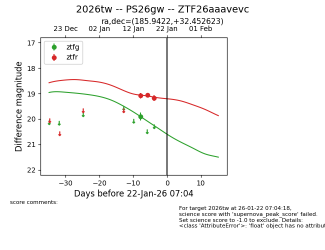
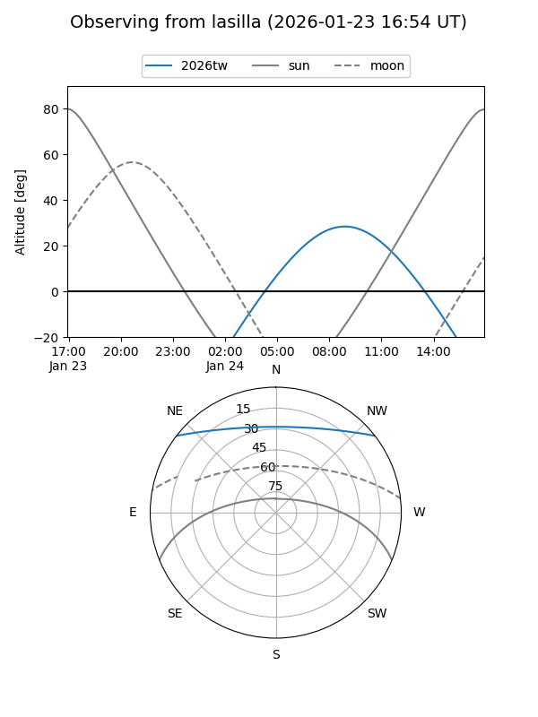
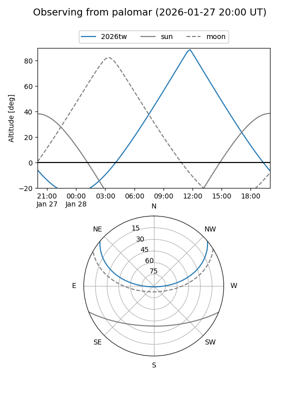
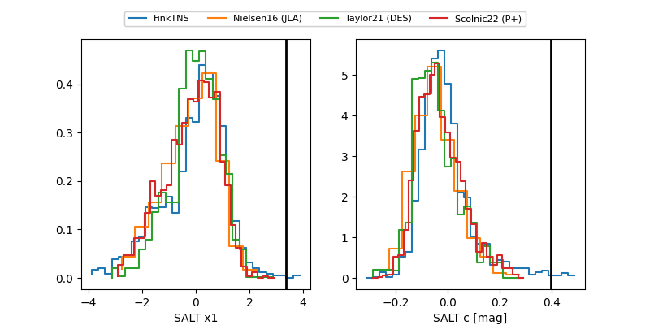

2026tw
Target 2026tw at 2026-01-23 09:46
Aliases and brokers:
FINK: link
Lasair: link
ALeRCE: link
TNS: link
YSE: link
alt names
ZTF26aaavevc (ztf,fink_ztf)
2026tw (tns,yse)
PS26gw (panstarrs)
Coordinates:
equatorial (ra, dec) = 185.9422,+32.45262
equatorial (HMS+DMS) = 12:23:46.12,+32:27:09.44
galactic (l, b) = (169.6843,+81.97973)
Flags:
Photometry:
last ztfg=19.90, ztfr=19.26
1 ztfg, 4 ztfr detections
Lightcurve

Visibility


Additional plots
